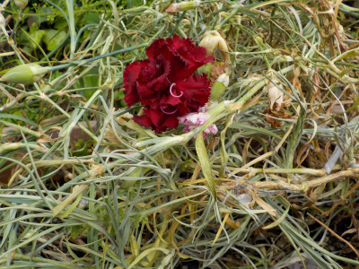
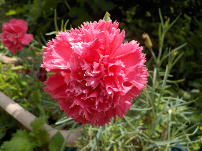
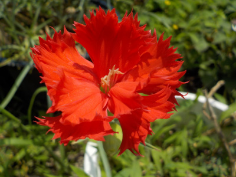
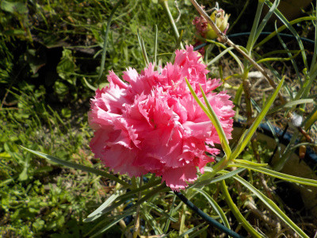
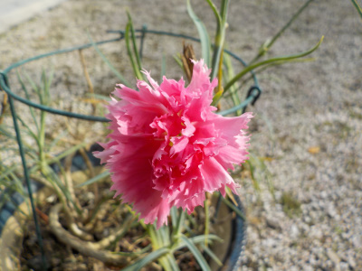
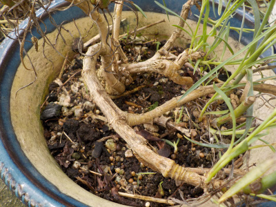
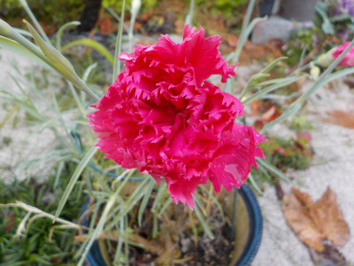
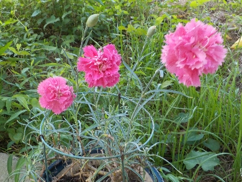
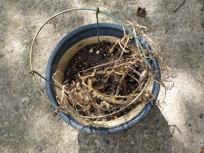

投げっぱなしで伸びっぱなしのカーネーションを切りました。
更新日 : 2020/05/10

カーネーションを放置していたら、茎がドンドン伸びてこんがらがってしまいました。
カーネーションは花が終わったら丈が伸びないように切らないといけない様です。
今日は母の日ってことで、花を見終わったらバッサリ切りました。
更新日 : 2020/05/10

カーネーションを放置していたら、茎がドンドン伸びてこんがらがってしまいました。
カーネーションは花が終わったら丈が伸びないように切らないといけない様です。
今日は母の日ってことで、花を見終わったらバッサリ切りました。
更新日 : 2020/06/28

カーネーションは花びらが多いのが好きです。

こんな感じのカーネーションはなんか嫌だな。
個人的な意見です。
更新日 : 2021/05/09

母の日に庭でカーネーションが咲いていました。
この花は特にそうなんですが、カーネーションってくしゃくしゃしてますよね。
よく見ると可愛くない気がします。
更新日 : 2022/03/21

シワクチャのカーネーシィンが咲きました。
春ですね。
更新日 : 2022/08/20

カーネーションは多年草なので何年も花を咲かせていますが、この古い株の寿命はあと何年なんだろう。
たぶん年々弱くなって行きますよね。長生きして欲しいです。
更新日 :2022/11/23

昔は言ってたかもしれないけど、最近勤労感謝の日に感謝したり感謝されたことってないな。
でも今年はカーネーションが咲いたので、カーネーションの花をもらった気分になれました。
ちょっと気分がいいですね。来年は勤労感謝の日には何か感謝しようと思いました。
更新日 : 2024/07/07

気温が高くなったので、カーネーションを日向から木陰に移動しました。
更新日 : 2025/09/20

植え替えしないで育てていたので、秋の雨の加湿で枯れたかな。
減った分は挿し芽で増やせばいい気もしますが、今ある株だけでも十分かな。
カーネーションを母の日の何度も買うなんてもったいない。え？育てる時間がもったいない。